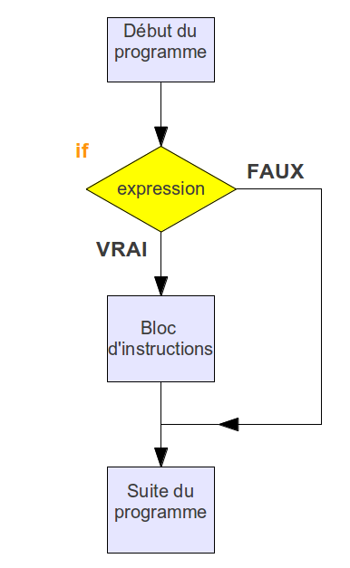

Thème 6 - Langages et programmation⚓︎
| 04 | Instructions conditionnelles en Python |
|---|
Instruction conditionnelle if⚓︎
L'instruction conditionnelle if permet de soumettre l'exécution d'instructions à une condition donnée.
Cette condition sera une expression booléenne, comme pour la boucle while.

📚 A retenir : Opérateurs de comparaison
| Opérateur | Signification |
|---|---|
== |
est égal à |
!= |
est différent de |
< |
inférieur à |
> |
supérieur à |
<= |
inférieur ou égal à |
>= |
supérieur ou égal à |
in |
appartient à |
not in |
n'appartient pas à |
Par exemple :
Si j’ai plus de 10 de moyenne au bac, je suis diplômé :
moyenne = 3
if moyenne >= 10: # ne pas oublier les :
print("je suis diplomé") # attention à l'indentation
## suite du programme
Lorsqu’on exécute ce code, il ne se passe rien.
La condition moyenne >= 10 n’est pas respectée et la ligne print("je suis displomé") n’est jamais atteinte.
Ajoutons une ligne pour mieux comprendre le déroulé des instructions :
moyenne = 3
if moyenne >= 10:
print("je suis diplômé")
print("le programme arrive ici dans tous les cas")
le programme arrive ici dans tous les cas
Instruction conditionnelle if else⚓︎
On peut toujours compléter un bloc if à l’aide d’un second bloc else, (sinon), qui ne sera exécuté que si la condition du if est fausse :
moyenne = 3
if moyenne >= 10:
print("je suis diplomé")
else:
print("j'ai raté le diplome")
print("le programme arrive ici dans tous les cas")
j'ai raté le diplome
le programme arrive ici dans tous les cas
Cette fois l’exécution du programme conduit à deux affichages :
- “j’ai raté le diplome”, parce que la condition du
ifest fausse, Python exécute leelse - le code arrive arrive ici dans tous les cas” parce que ce bloc n’est pas indenté.
Reprenez cet exemple en changeant la valeur de la moyenne afin d’exécuter le if.
moyenne = 12
if moyenne >= 10:
print("je suis diplomé")
else:
print("j'ai raté le diplome")
print("le programme arrive ici dans tous les cas")
je suis diplomé
le programme arrive ici dans tous les cas
Instruction conditionnelle if elif else⚓︎
Entre if et else on peut insérer autant de bloc elif condition: que l’on souhaite.
Par exemple :
moyenne = 9
if moyenne >= 10:
print("je suis diplome")
elif moyenne >= 8:
print("je vais à l'oral de rattrapage")
else:
print("j'ai raté le diplome")
print("le programme arrive ici dans tous les cas")
je vais à l'oral de rattrapage
le programme arrive ici dans tous les cas
Lorsqu’on exécute ce code avec différentes valeurs de la moyenne (5, 9, 11 par exemple) on réalise qu’un des blocs if, elif, else est exécuté. Jamais deux.
Exercices⚓︎
import _cours04_autotest as a
🖍 Exercice 1 :
1. Que vaut la valeur finale de la variable b ?
a = 7
b = 12
if a > 5:
b = b - 4
if b >= 10:
b = b + 1
2. Que vaut la valeur finale de la variable b ?
a = 7
b = 12
if a > 5:
b = b - 4
elif b >= 10:
b = b + 1
3. Que vaut la valeur finale de la variable b ?
a = 7
b = 12
if a > 5:
b = b - 4
else:
b = b + 1
4. Que vaut la valeur finale de la variable a ?
a = 10
if a < 5:
a = 20
elif a < 100:
a = 500
else:
a = 0
🖍 et 💻 Exercice 2 :
Les codes suivants sont-ils valides (on ne demande pas ce qu’ils font) ? S’ils sont invalides, rectifiez les.
Code 1 :
a = 10
if a == 5:
a = 2
Code 2 :
a = 10
elif a == 5:
a = 2
Code 3 :
a = 10
if a = 5:
a == 2
Code 4 :
a = 10
if a == 5:
a = 2
💻 Exercice 3 :
Complétez le programme “moyenne” afin d’afficher la mention obtenue par le candidat :
- Très bien (>= 16 de moyenne),
- Bien (>= 14 de moyenne),
- Assez Bien (>= 12 de moyenne),
💻 Exercice 4 :
L’impôt sur le revenu de Groland est assez simple à calculer :
- un particulier qui gagne moins de 20.000€ de revenus par an doit verser 1€ d’impôt symbolique,
- entre 50.000 et 100.000€ on doit verser 30% aux impôts,
- au dela de 100.000€ de revenus, on doit verser 50% en impôt.
Ecrire un script qui demande à un utilisateur le montant de ses revenus annuels et affiche le montant des impots qu’il doit verser.
je précise aux plus naïfs que Groland n’existe pas.
💻 Exercice 5 :
L'équivalence entre l'âge d'un chien et l'âge humain est donné en procédant ainsi : - lorsque le chien a deux ans ou moins, chaque année compte pour douze années «humaines» - lorsque le chien a plus de deux ans, chaque année au delà des des deux premières compte pour six années «humaines».
Par exemple un chien de cinq ans a un âge «humain» de \(2 \times 12 + 3 \times 6 = 42\) ans.
Question 1 : Programmer la fonction age_humain qui prend en argument un entier n correspondant à l'âge d'un chien et renvoie l'âge humain correspondant.
def age_humain(n):
...
...
...
return ...
Question 2 : En utilisant votre fonction, déterminer quel est l'âge «humain» d'un chien de 7 ans.
💻 Exercice 6 :
Meilleur tarif
Remarque : En python, une fonction peut renvoyer plusieurs valeurs. Pour cela, après le mot clef return, mettre les valeurs à renvoyer dans des parenthèses, séparées par des virgules.
On considère les tarifs proposés par deux entreprises de location de véhicules pour la location d’un même modèle automobile :
- Entreprise A : 15 € par jour puis 27 centimes par kilomètre parcouru
- Entreprise B : 26 € par jour puis 19 centimes par kilomètre parcouru
Question 1 : Programmer une fonction meilleur_tarif qui :
- prend en arguments :
- un entier km correspondant au nombre de kilomètres à parcourir,
- un entier nbjours correspondant au nombre de jours de location;
- et renvoie :
- l'entreprise qui propose le tarif le plus économique,
- le tarif avec cette entreprise.
On pourra consulter le jeu de tests si besoin.
Remarque : En cas d'égalité de tarif entre les deux entreprises, on renverra l'entreprise 'AB' (voir dernier test).
def meilleur_tarif(km, nbjours):
...
...
...
return ...
💻 Exercice 7 :
Casino
Remarque 1 : Vous pouvez (et c'est même à cela que ça sert) réutiliser une fonction dans une autre fonction. Ici il faudra y penser pour la dernière fonction à programmer.
Remarque 2 : pour tirer un nombre entier au hasard entre deux nombres a et b on utilisera la méthode randint du module random. Par exemple pour tirer un nombre entier au hasard entre 1 et 6 (tirage d'un dé) :
from random import randint
...
...
resultat_du_de = randint(1, 6)
...
...
Dans un casino, les machines à sous (voir des images ici : page wikipédia ) comportent trois roues ou trois cylindres mécaniques portant chacun les chiffres de 1 à 9. En faisant tourner ces roues ou cylindres, on peut tirer au hasard un nombre entre 111 et 999 (ne comportant pas de chiffre zéro).
Le joueur mise un euro et récupère un gain qui dépend du résultat : - si les trois chiffres sont égaux à sept, le joueur récupère une somme de 333 euros, - sinon, si les trois chiffres sont égaux, le joueur récupère une somme de 33 euros, - sinon, si le chiffre des centaines est égal au chiffre des unités, le joueur récupère une somme de 1 euro, - sinon, si les trois chiffres sont consécutifs dans l'ordre croissant (par exemple 567), le joueur récupère une somme de 15 euros, - sinon il ne récupère rien.
Question 1 : Compléter la fonction gain_tirage qui prend en paramètre trois chiffres c, d et u correspondant aux chiffres des centaines, des dizaines et des unités et qui renvoie la somme récupérée correspondant à ce tirage.
def gain_tirage(c, d, u):
...
...
...
...
...
...
return somme
Question 2 : En utilisant votre fonction, déterminer le gain associé au tirage (5, 6, 5).